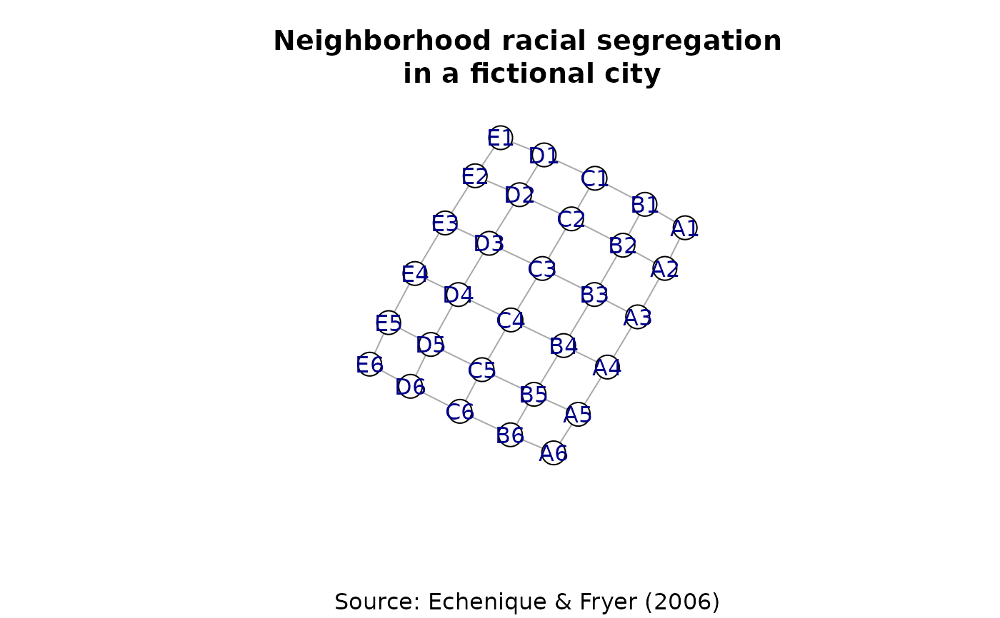

Artificial example data from Echenique & Fryer (2006) Figure III representing a city with black and white neighbourhoods.
EF3
Object of class "igraph". An undirected network with vertex attributes:
name -- vertex names of the form "A1" in which letter and number indicate
the position in the lattice
race -- values 1 or 2 indicate the two groups
Echenique, Federico and Roland G. Fryer, Jr. (2006) "A Measure of Segregation Based On Social Interactions" Quarterly Journal of Economics CXXII(2):441-485
This data is taken from Echenique & Fryer (2006, figure III). The data represent a fictional city composed of 30 neighborhoods that are either black or white.
if(requireNamespace("igraph", quietly = TRUE)) { set.seed(1) plot( EF3, layout = igraph::layout.fruchterman.reingold, vertex.color = igraph::V(EF3)$type+1, vertex.label.family = "", sub = "Source: Echenique & Fryer (2006)", main = "Neighborhood racial segregation\n in a fictional city" ) }